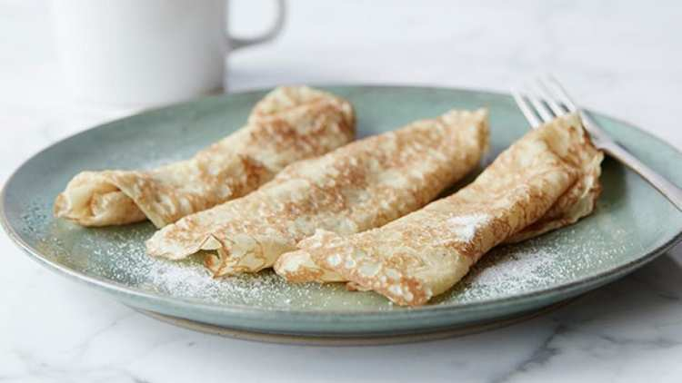

Palacsinta
Hungarian pancakes are thin crepes, rolled up and sprinkled with powdered sugar. There are several things you can fill the palacsinta with, like apricot, strawberry or blueberry jam, vanilla or chocolate pudding, apple sauce with cinnamon, ground walnut, or cocoa powder. It is a really easy to make recipe, a quick dessert which is done in 30 minutes and tastes great. This kind of pancake is very popular in Hungary. Its origin is not clear, most probably it developed from the roman plazenta, a small round cake that was eaten instead of bread. Hungarian pancakes are thin, similar to French crepes, and totally unlike American hot cakes or griddle cakes. Plus, they are not typically eaten for breakfast.

- 2 large eggs
- 3/4 cup milk
- 1/2 cup water
- 1 cup flour
- 3 tablespoons melted butter
- Butter, for coating the pan
- In a blender, combine all of the ingredients and pulse for 10 seconds. Place the crepe batter in the refrigerator for 1 hour. This allows the bubbles to subside so the crepes will be less likely to tear during cooking. The batter will keep for up to 48 hours.
- Heat a small non-stick pan. Add butter to coat. Pour 1 ounce of batter into the center of the pan and swirl to spread evenly. Cook for 30 seconds and flip. Cook for another 10 seconds and remove to the cutting board.
- Lay them out flat so they can cool. Continue until all batter is gone. After they have cooled you can stack them and store in sealable plastic bags in the refrigerator for several days or in the freezer for up to two months. When using frozen crepes, thaw on a rack before gently peeling apart.
Reference: foodnetwork and budapestcookingclass